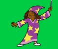

My Games
When Brandon and I were making City Breakout, we did a lot of trial and error to figure out the best way to make the game execute. Our biggest issues was for the ball to bounce off of the paddle. We had to make the ball change its direction on impact with the paddle sprite. There was a lot of issues with this. The ball would either hit the paddle or it would go straight through it. Secondly, the ball would sometimes bounce into an awkward angle where it would infinitely bounce left to right and never hit a block. We countered these issues by altering the degrees in which the ball would bounce off of the paddle. After we solved that issue, we went on to create the real aesthetic design of the game and one of the effects I like the most is the disintergrating blocks. We simply create a script where when the ball hits the block, it would switch through several costumes to show the effect of breaking apart. Overall, I think our game was a successful take on Atari Breakout and both Brandon and I are proud of it.
